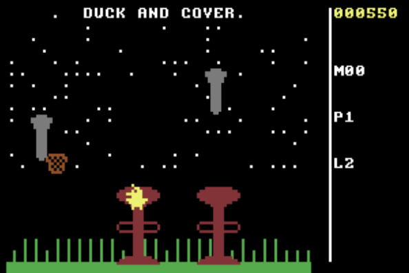
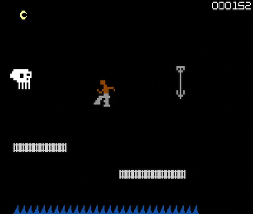
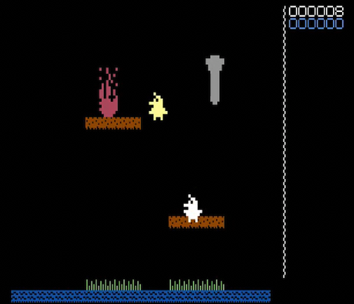
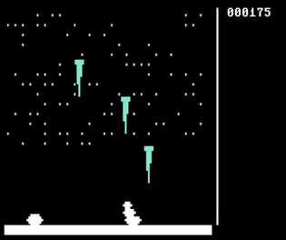

Welcome to the retro homebrews section!
Here you will find all the games I programmed for vintage computers and consoles.
Games are sorted by system on the left, click a link to find out more.
Most of the games are fully open-source, but some have only been released on physical cartridge.
Some of the C64 games are playable in the web browser via the demo section.
(Play the demos HERE)GALLERY:



